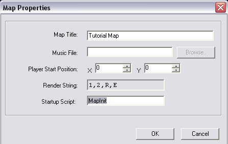

Chapter 5:
Music and Sounds
Music:
What game is complete without an amazing soundtrack? Lucky for you playing music is just about the easiest
thing you can do in verge. There are a few methods that you can use to play a song in verge, however at this level we'll only
concern ourselves with the basic two.
Maped3: Loading Music
Remember when we setup the script we wanted to run as soon as we loaded the map? Well, in the same place we have an option to load
and play a song as soon as the map is loaded. Open your map and navigate your way back to the Map Properties screen (Map->Properties).

This image should look familiar to you, and you'll notice that there is a line which says "Music File" with a box beside it. You can put in the name
of your music file manually, or you can click browse to have windows help you locate it. When you're done, save your map. Now whenever you load the map
that music file will always play.
Make it so your map loads "aurora.mod", the music file I included with this package, and try it out!
VC: Loading Music
There are some instances where having the same song automatically play when you load the map is undesirable. Fear not my friends, for verge
has a couple of handy Built-in functions that can help.
PlayMusic() is the first and most essential. For PlayMusic() you must know the file name and location of the file that you are wanting to play.
If we wanted to load the module I included, "aurora.mod", then we would call:
PlayMusic("aurora.mod");
So, if we were to add this line in the startup script we created for tutoral.map, then when the map was loaded it would play the song "aurora.mod". Pretty
straight-forward huh? :)
There are a couple of other handy built-in functions for music, which fall under the "Simple Music API" category that you will probably want to use.
One is StopMusic(); which, when called, will stop the current song from playing. The other is SetMusicVolume(). When we pass a value to this function
it sets the music volume to the desired number. 0 being completely silent, and 100 being the loudest. For example:
void MapInit()
{
PlayMusic("aurora.mod"); // Load and Play "aurora.mod"
SetMusicVolume(50); // Set it so that it plays half as loud as normal
}
All this would do is play the song "aurora.mod" and set it to half the volume that it would normally play at.
And that is basically all you need to know to add groovy music to your epic game!
Sounds:
Sounds are a little more complicated than loading music. With sound effects we have to load the file into a variable and use another built-in function
to call it. Let's take this as an opportunity to take most of what we have learned and put it into practise!
Project Time:
Our goal here is to place a save point on the map then create a new zone that will make a call to a script
which tells verge to play a sound indicating that we have indeed stumbled upon a save point.
First things first, we should place a new tile on our map. Lucky for you, our tutorial.map includes a VSP that
has a fancy, animating, save point tile for our use! (It's tile number: 484) So, let's place it somewhere. (It doesn't matter where, we
really just want to use it for reference, so we know where to place our zone, and where to step in order to activate the event.)
Note: Make sure you select "Layer 1" from the layer list, when placing this tile. If you do not, the pink stuff around the save point
won't disappear.
Next, we'll want to open "tutorial.vc" and create a new script. This is where we'll introduce the new built-in functions required to play sound effects.
void SavePoint()
{
int sound = LoadSound("save.wav"); // Create a variable and load the sound into it.
PlaySound(sound, 100); // Play the sound at 100 percent volume
PlayerMove("W50"); // Stop player movement for 50/100ths of a second
FreeSound(sound);
}
There's quite a bit to digest here, so we'll dissect it line by line.
int sound = LoadSound("save.wav");
Here, just like in our system.vc where we said "int player;", we are declaring a variable. In this case it is a local variable which means that it only exists
within this script. If we were to try and use it outside of the script, our compiler would get mad at us and spit out an error.
Remember when we told verge to load "darin.chr" into the variable "player"? Well this is kind of the same idea only instead, we are loading a sound, and preparing
it for use. We used another built-in function called LoadSound() to load the ".wav" file, "save.wav". If our ".wav" file was called "attack.wav" we would put "attack.wav"
inside the brackets instead.
PlaySound(sound, 100);
This is another built-in function. PlaySound() takes two arguments, the first being the variable we loaded our sound into, and the second is the volume
at which we want the sound to play at. 0 being silence, and 100 being the loudest.
PlayerMove("W50");
Here we use yet another built-in function telling the engine to make the Player character Wait 50/100ths of a second, (remember Movement scripts in Chapter 3) that is half a second, so that the sound
can finish playing. This is NOT required, at all, to play sounds. It is just a necessity in this case so that the sound can finish playing before verge "Free's" it from memory
thanks to the next call that we make:
FreeSound(sound);
When you use LoadSound() what you are actually doing is creating a space in memory, for the sound to reside in, so that we can tell verge to play it. If we don't tell
verge to "Free" the sound from memory, that is, give us back the memory we used, there is a chance that it will remain there. If you don't use FreeSound() to, oddly enough, free the sound,
you run the risk of having a memory leak, which may make your computer run slower, or even freeze causing you to reboot; Therefore, it is always good practise to free the sound after you're finished using it.
FreeSound() takes one arguement, which is the handle(variable), we loaded the sound into in the first place. In our case it was the integer "sound".
Finishing our Project:
The final step is to refer to Chapter 4 to place a zone over the save point, and set it so that this script will be called when we step on it. (Hint: We will *always* want
the save point to activate when we stand on it; therefore, you should set the activation rate to 255. This insures that the script "SavePoint()" will always be called.)
To Summarize, this is what you now know:
- How to load and play music via two methods
- How to load, play, and free sound effects
Table Of Contents
Chapter 6: Fonts and Images; A Basic Textbox